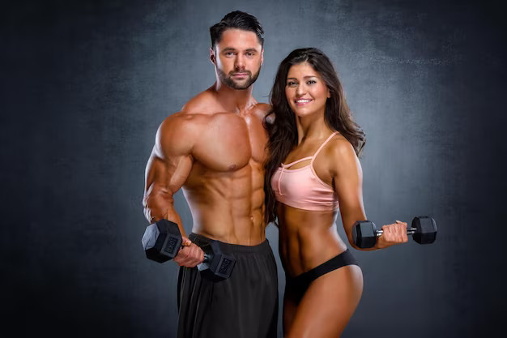
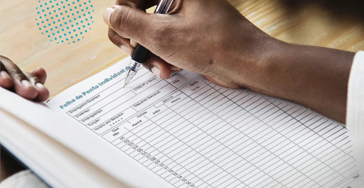
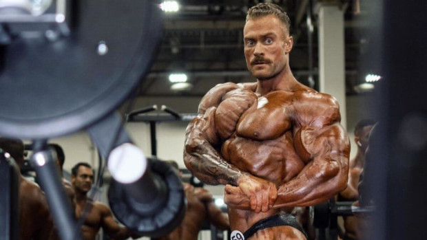

"Transforme seu corpo, fortaleça sua mente. Bem-vindo ao lugar onde os músculos encontram a excelência."

Excelência no Treino: A Importância e o Guia para Elaborar sua Planilha Personalizada
Por que Montar uma Planilha de Treino?
Montar uma planilha de treino é uma prática fundamental para aqueles que buscam otimizar seus esforços na busca por resultados físicos. Ao invés de depender apenas da memória ou improvisar cada sessão de exercícios, uma planilha proporciona uma abordagem estruturada e eficiente para alcançar seus objetivos de forma consistente.
O especialista ... explica a importancia de uma planilha de treino neste video:
Uma planilha proporciona uma visão organizada do seu plano de treino, permitindo que você estruture suas atividades de forma lógica e progressiva. Isso ajuda na clareza dos seus objetivos e na gestão do tempo durante cada sessão.
Acompanhamento de Progresso:
Através da planilha, você pode monitorar seu progresso ao longo do tempo. Ao registrar regularmente suas atividades, pesos utilizados, e outras métricas relevantes, é possível identificar padrões, ajustar o treino conforme necessário e celebrar conquistas.
Motivação Pessoal:
O ato de preencher e seguir uma planilha cria um senso de responsabilidade e comprometimento. Ao visualizar suas metas e verificar seu progresso, você se sentirá mais motivado e engajado, contribuindo para a consistência a longo prazo.
Variedade e Equilíbrio:
Uma planilha bem elaborada permite a inclusão de uma variedade de exercícios, garantindo que todos os grupos musculares sejam trabalhados de maneira equilibrada. Isso reduz o risco de desequilíbrios musculares e lesões decorrentes de treinos monótonos.
Como Montar uma Planilha de Treino:
Ao criar uma planilha de treino, siga estes passos para garantir eficácia e personalização:
Defina Seus Objetivos:
Identifique claramente seus objetivos, seja ganho de massa muscular, perda de peso, aumento de resistência ou outros. Isso orientará a estrutura do seu treino.
Estabeleça um Cronograma:
Determine a frequência semanal e a duração de cada sessão de treino. Isso criará uma base para a distribuição adequada dos exercícios.
Escolha os Exercícios Adequados:
Selecione exercícios que estejam alinhados com seus objetivos e que trabalhem diferentes grupos musculares. Varie entre exercícios de força, resistência e flexibilidade.
Defina Séries e Repetições:
Estabeleça o número de séries e repetições para cada exercício. Isso ajuda a padronizar seu treino e a monitorar o progresso de maneira mais eficaz.
Registre Peso e Intensidade:

Ao realizar exercícios de resistência, registre os pesos utilizados. Isso permite que você ajuste progressivamente a carga, promovendo um crescimento contínuo.
Inclua Dias de Descanso:
Não se esqueça de incluir dias de descanso na sua planilha. O descanso adequado é crucial para a recuperação e prevenção de lesões.
Nutrição e Hidratação:
Considere incluir uma seção para registro de hábitos alimentares e consumo de água na sua planilha. A nutrição adequada é essencial para potencializar os resultados do treino.
Ajustes Periódicos:

Periodicamente, revise e ajuste sua planilha para garantir que ela continue desafiadora e alinhada aos seus objetivos em constante evolução.
Ao seguir esses princípios, você estará no caminho certo para criar uma planilha de treino personalizada e eficiente, que o ajudará a atingir seus objetivos de forma consistente e sustentável.
Para mais dicas e informações sobre treinamento físico, continue explorando nosso site e descubra como você pode alcançar a excelência no seu programa de exercícios. Lembre-se, a chave para o sucesso está na consistência e na abordagem personalizada do seu treino!